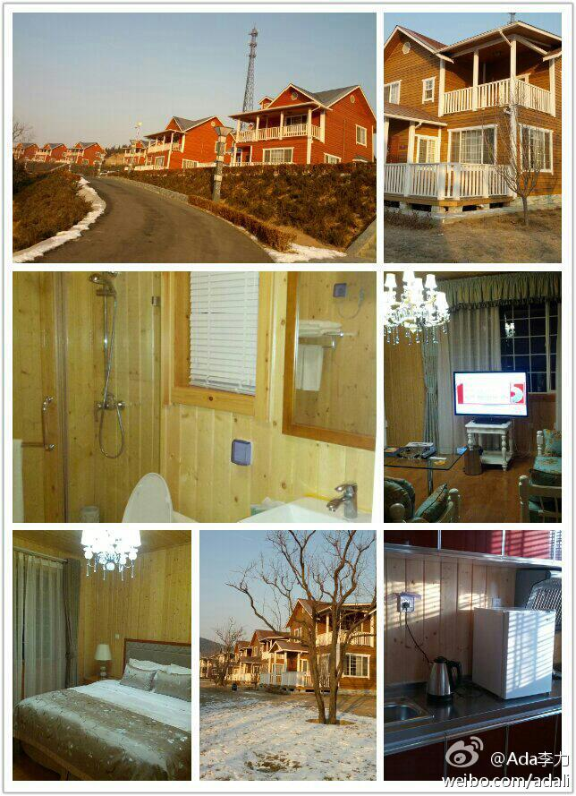
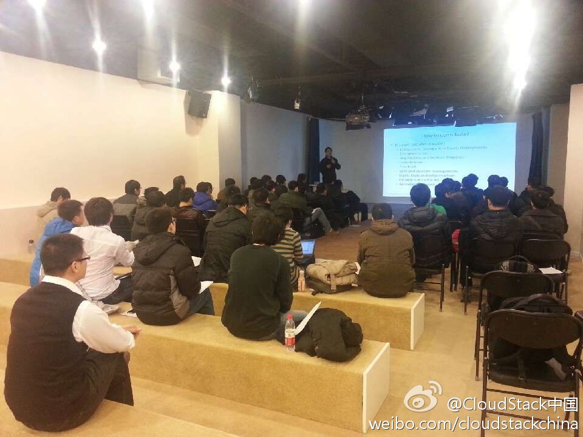

渔阳滑雪场的新建别墅群不错，崭新崭新的，里外都是木板，连洗手间天花板和四壁都铺满木条。地采暖，屋里温度很不错。楼下楼上三个卧室，厨房和客厅，很适合大家庭休闲度假。趁新要早来，我很怀疑几年后这些别墅状况就会很不堪。 我在这里:北京·北京渔阳国际滑雪场 
人不少啊。@CloudStack中国:#CloudStack技术沙龙#今天是2013年第一场技术沙龙，大家牺牲了周末休息的时间来捧场，小编我很是感动啊！现场直击：Gavin@lee-xh 与大家分享Apache CloudStack社区新年新动向！@Ada李力 @CSDN云计算 @中云网官方微博 
倾情推荐！虽然之前有剧透，但现场还是笑得眼泪都出来了，无节操无底线屌丝程序员微电影！//@有志青年李大叔:咋没提是咱俩倾情演出的话说，我觉得你至少在我们这个圈里要红了//@梁颖_行云流水:有我友情出演的角色…耐心看啊~//@CSDN闫辉:现在转发近两千，各位演员，你们火了！@闫辉_Life加加:#我在搜狐视频上传#《屌丝程序员》：“csdn年会上，由我拍摄，导演，剪辑的年度大片《屌丝程序员》，这是一步集合了动作、武打、爱情、基情、皮鞭、励志的微电影。”网页链接
@八爪李炯明:#徒步测算距离# 刚才测算了一下步行距离，从"福玛大厦"到"方恒国际" 15分钟，春节后我将搬去与@蒋涛CSDN @CSDN闫辉 @范凯robbin 等肩并肩作战，为csdn3.0的远景奋斗，能为中国软件开发者以及企业做一些事情，这是一件令人兴奋以及期待的事情!
 北京·北京渔阳国际滑雪场
北京·北京渔阳国际滑雪场